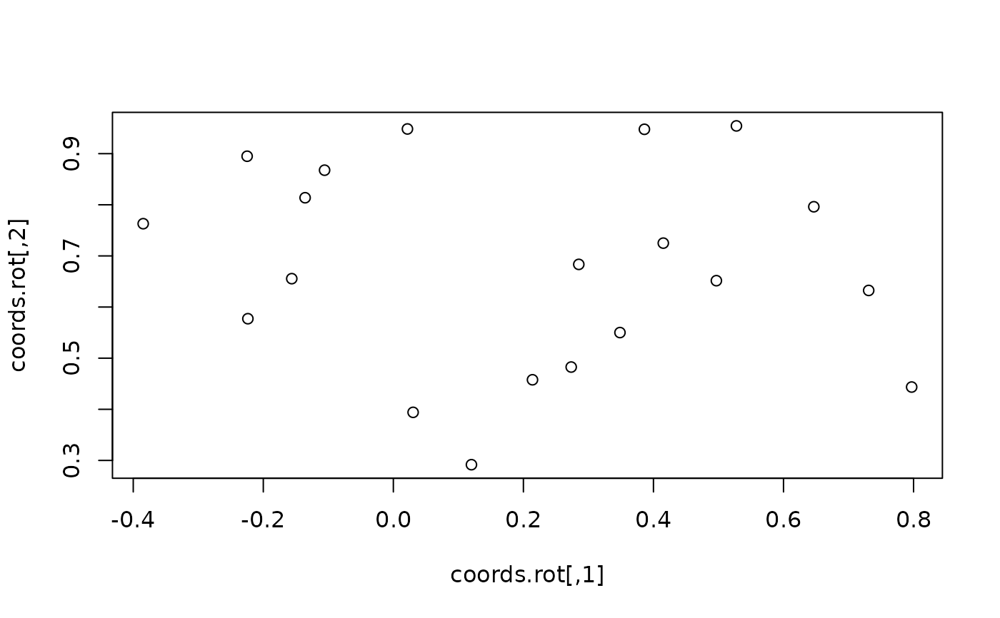

Rotate a set of XY coordinates by an angle (in radians)
rotation(xy, angle)Arguments
- xy
A 2-columns matrix or data frame containing a set of X and Y coordinates.
- angle
Numeric. A scalar giving the angle at which the points should be rotated. The angle is in radians.
Value
A 2-columns matrix of the same size as xy giving the rotated
coordinates.
Examples
### Create a set of coordinates
coords<-cbind(runif(20),runif(20))
### Create a series of angles
rad<-seq(0,pi,l=20)
for(i in rad){
coords.rot<-rotation(coords,i)
plot(coords.rot)
}

 ### Rotate the coordinates by an angle of 90 degrees
coords.90<-rotation(coords,90*pi/180)
coords.90
#> [,1] [,2]
#> [1,] -0.62650196 0.87697251
#> [2,] -0.10573384 0.09323302
#> [3,] -0.73810992 0.82341754
#> [4,] -0.74206760 0.97142140
#> [5,] -0.11323399 0.37460778
#> [6,] -0.57605779 0.52572330
#> [7,] -0.17433357 0.20942694
#> [8,] -0.89006536 0.92606493
#> [9,] -0.11238534 0.60286652
#> [10,] -0.96535564 0.88288227
#> [11,] -0.79481238 0.11480005
#> [12,] -0.40391300 0.17413262
#> [13,] -0.84602802 0.21418894
#> [14,] -0.24781229 0.57725911
#> [15,] -0.81251495 0.17870292
#> [16,] -0.07323358 0.64537367
#> [17,] -0.72576347 0.66215541
#> [18,] -0.78240759 0.10612192
#> [19,] -0.27625394 0.48834857
#> [20,] -0.97342661 0.26411753
plot(coords,xlim=range(rbind(coords.90,coords)[,1]),ylim=range(rbind(coords.90,coords)[,2]),asp=1)
points(coords.90,pch=19)
### Rotate the coordinates by an angle of 90 degrees
coords.90<-rotation(coords,90*pi/180)
coords.90
#> [,1] [,2]
#> [1,] -0.62650196 0.87697251
#> [2,] -0.10573384 0.09323302
#> [3,] -0.73810992 0.82341754
#> [4,] -0.74206760 0.97142140
#> [5,] -0.11323399 0.37460778
#> [6,] -0.57605779 0.52572330
#> [7,] -0.17433357 0.20942694
#> [8,] -0.89006536 0.92606493
#> [9,] -0.11238534 0.60286652
#> [10,] -0.96535564 0.88288227
#> [11,] -0.79481238 0.11480005
#> [12,] -0.40391300 0.17413262
#> [13,] -0.84602802 0.21418894
#> [14,] -0.24781229 0.57725911
#> [15,] -0.81251495 0.17870292
#> [16,] -0.07323358 0.64537367
#> [17,] -0.72576347 0.66215541
#> [18,] -0.78240759 0.10612192
#> [19,] -0.27625394 0.48834857
#> [20,] -0.97342661 0.26411753
plot(coords,xlim=range(rbind(coords.90,coords)[,1]),ylim=range(rbind(coords.90,coords)[,2]),asp=1)
points(coords.90,pch=19)